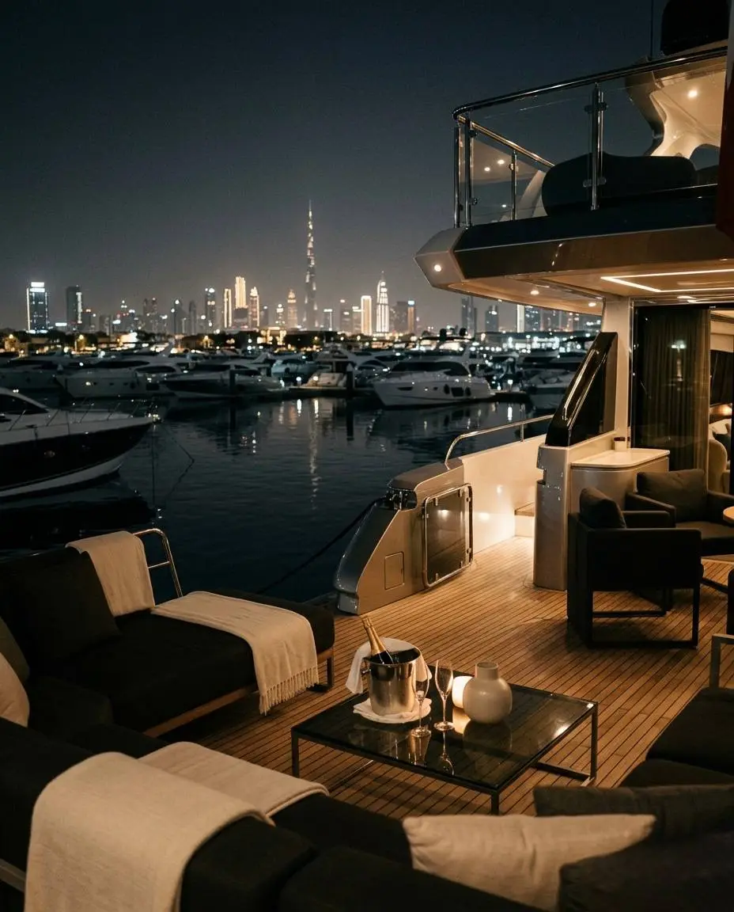

ROAD TRIPS ? ADVENTURE ? DISCOVERY
Escape the city and discover mountains, beaches, deserts and cultural destinations located just a few hours from Dubai.
Dubai's strategic location makes it an ideal starting point for exploring the rest of the UAE. Within a few hours, visitors can experience mountain landscapes, desert adventures, coastal escapes and historic towns.
Located in the Hajar Mountains, Hatta is one of the UAE's most popular weekend destinations.
Highlights include:
? Hatta Dam
? Kayaking
? Hiking trails
? Mountain biking
? Heritage Village
The UAE capital offers culture, architecture and entertainment.
Popular attractions:
? Sheikh Zayed Grand Mosque
? Louvre Abu Dhabi
? Yas Island
? Ferrari World
? Corniche Beach
Known for mountains and adventure tourism, Ras Al Khaimah offers outdoor activities and luxury resorts.
Top experiences:
? Jebel Jais
? World's longest zipline
? Mountain resorts
? Hiking routes
Located on the Gulf of Oman, Fujairah is known for beaches, diving and coastal scenery.
Visitors enjoy:
? Snorkeling
? Diving
? Beach resorts
? Historic forts
Sharjah offers museums, cultural attractions and heritage districts.
Highlights include:
? Al Noor Island
? Sharjah Museum of Islamic Civilization
? Al Qasba
? Heart of Sharjah
Many travelers choose desert retreats located outside Dubai for overnight stays and adventure experiences.
Popular activities include:
? Desert safaris
? Stargazing
? Camel rides
? Luxury desert resorts
The ideal season for road trips and outdoor activities runs from October through April when temperatures are more comfortable.
While Dubai offers endless attractions, some of the UAE's most memorable experiences lie beyond the city. Whether you're seeking mountains, beaches, culture or adventure, weekend trips provide a different perspective on the Emirates.